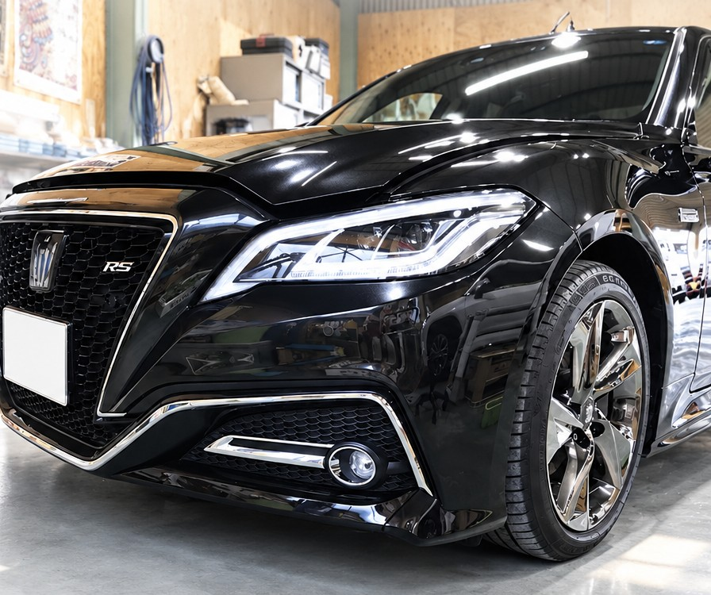
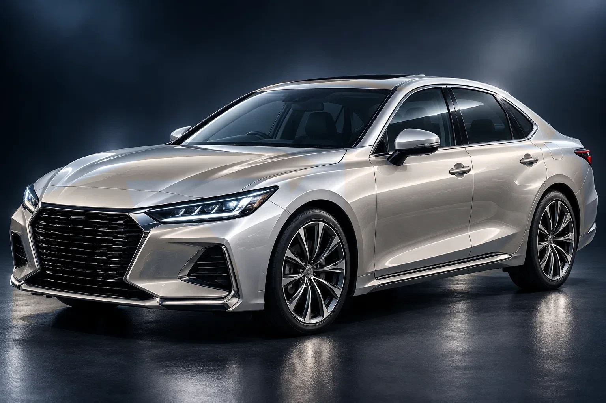
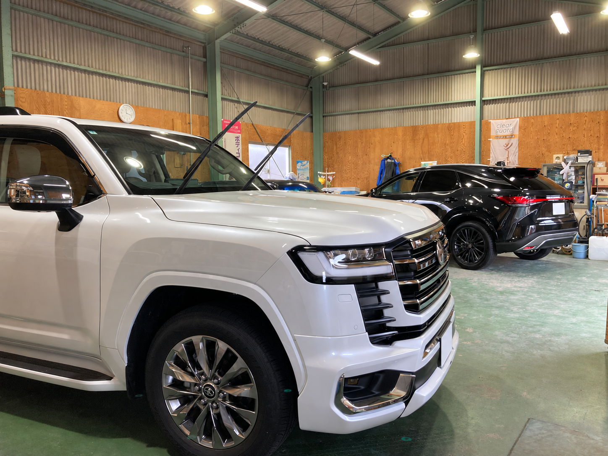
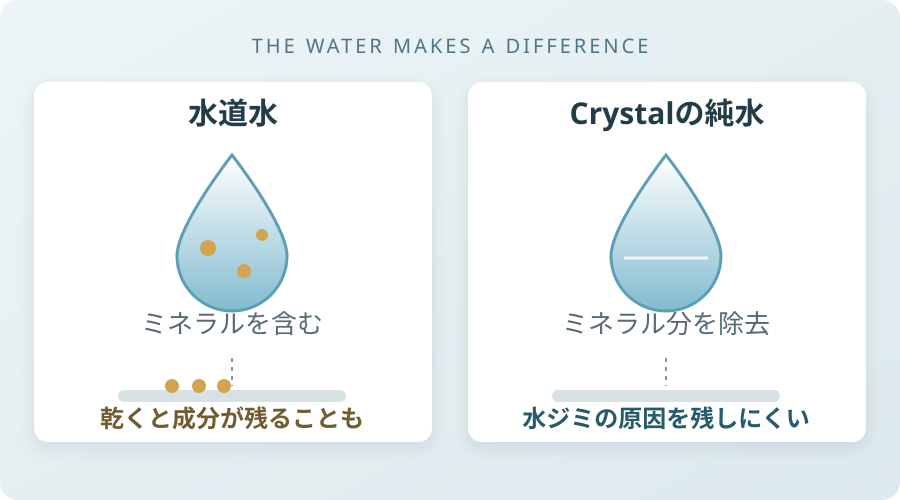
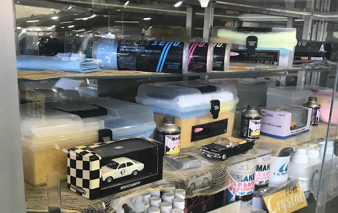
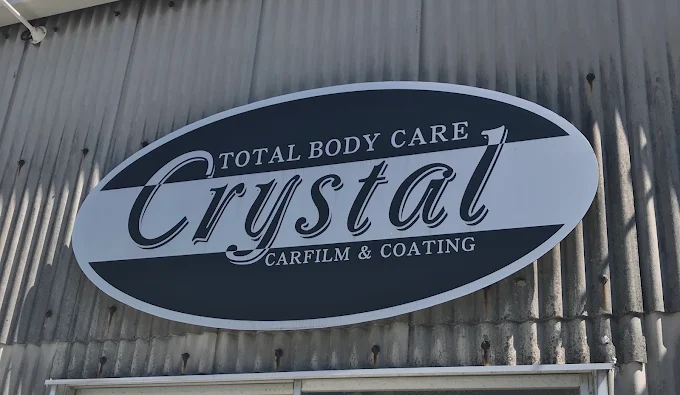
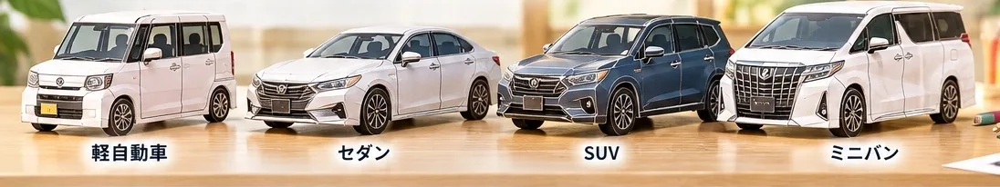

01 / LISTEN
車の状態とご希望を伺います。
塗装の状態、保管場所、洗車の習慣。メニュー名を決める前に、いまのお車と、これからの乗り方を伺います。

選べる施工メニュー
気になる施工を選ぶと、下の詳しい説明と写真へ移動します。
施工・相談シミュレーター
専門用語が分からなくても大丈夫。
車を見ながら探すか、気になることを整理するか。お好きな方からどうぞ。
車の気になる場所をタップ。
そこにできる施工と、守り方が分かります。

ボディ窓ガラスライト保管場所や乗り方、ご希望を整理。
そのまま電話やメールの相談に使えます。
施工内容や製品、料金は、お車の状態とお話を伺ってご提案します。
CRYSTALについて / WHY CRYSTAL
カーコーティングとカーフィルムの専門店です。お車の状態や乗り方、ご希望を確かめ、何をどこまで施工するかを一緒に考え、一台ずつ丁寧に仕上げます。
きれいになった、その瞬間だけでなく。これからも大切に乗る一台のために、施工後のお手入れまで相談できる関係を大切にしています。

01 / LISTEN
塗装の状態、保管場所、洗車の習慣。メニュー名を決める前に、いまのお車と、これからの乗り方を伺います。
02 / PREPARE
どこを整え、どこまで施工するか。見積もりの数字だけでは見えない仕事も、内容を確かめながらお選びください。
03 / CARE
洗い方やケア用品に迷ったときも。小さな疑問に親身に向き合い、施工後も、車のことを話せる関係を大切にしています。
水道水との違いと、純水を使う理由をご紹介します。
純水洗車について見る ↓初めての個人のお客様も。
ディーラー様からの新車施工も。
DETAILS & PROCESS
ご希望に合わせて、各施工の進め方と実際の作業をご案内します。
01 / MAIN SERVICE
ガラスコーティングを中心に、塗装の状態に合わせて。
保管場所、走る場所、洗車の頻度、あと何年乗るか。お車の状態と使い方を伺い、必要な磨きとカーコーティングをご提案します。
傷やくすみなど、いまの状態と気になる箇所を一緒に確認します。
塗装の状態に合わせて、必要な磨きの範囲を決めます。写真はボディ研磨の作業中です。
保管場所や洗車の頻度も伺い、施工内容とその後のお手入れをご案内します。
02 / SERVICE
見た目も、日差しも、車内からの見え方も。
濃さや断熱性能だけで決めず、外からの視線や夜の運転時の見え方も含めて相談できます。写真では、ガラスの準備から貼り付け、仕上がりまでをご覧いただけます。
窓のどこに貼るか、濃さや外からの見え方、夜の運転時の見え方を相談します。
内装を養生してからガラス面を清掃し、貼り付ける準備をします。
写真のようにフィルムを貼り、仕上がりを確認します。クラウンエステートの施工前後もご覧ください。
内装を養生し、後部ドアまわりの窓へフィルムを施工している様子です。
03 / SERVICE
毎日触れるシートも、大切な愛車の一部。
素材と今の状態を確かめ、保護する範囲やお手入れ方法をご案内します。写真はマセラティのシートコーティング施工車です。
シートの素材や現在の状態を見て、施工できる範囲を確認します。
よく触れる部分や汚れが気になる場所など、ご希望を伺います。
施工後の扱い方や日常のお手入れも、素材に合わせてご案内します。
04 / SERVICE
雨の日の窓まわりも、使い方に合わせて。
窓ガラスの状態や、普段のお手入れ、ご希望の施工範囲を伺います。ボディのガラスコーティングと一緒に相談すれば、作業の順番やお預かりの日程もまとめて考えられます。
フロント、サイドなど、雨の日に気になる箇所を伺います。
汚れや既存の処理を確認し、必要な作業をご案内します。
施工範囲とお手入れ方法を、作業前にお伝えします。
05 / SERVICE
ヘッドライトから、細かな外装パーツまで。
ヘッドライト、ピラー、メッキモール、エンブレムなどをプロテクションフィルムで保護します。テールランプやフォグランプも施工例があります。部位の形や状態を確認し、対応できる内容をご案内します。写真ではヘッドライトの作業と、白メッキモールの施工前後をご覧いただけます。
レンズや既存フィルムの状態を見て、施工内容を相談します。
ヘッドライトの形に合わせて貼り、端部を丁寧に仕上げます。
貼り付け後の見え方を写真でご覧いただけます。
白い斑点が気になる施工前の写真と、赤い車のモールにフィルムを貼る工程です。＋から写真全体をご覧いただけます。
06 / SERVICE
足元まで、愛車らしく。
ホイールの状態や形状を確認し、施工できる範囲をご案内します。見えやすい表面だけでなく、どこまで施工するかもお車に合わせて相談できます。
形状や汚れの状態、気になる部分を確認します。
装着状態での作業か、単体での作業かも含めてご案内します。
施工中の写真とあわせて、その後の洗い方もご相談いただけます。
CRYSTALのこだわり / PURE WATER WASH
純水とは、水道水からミネラル分を取り除いた水です。
水滴が乾いたときにミネラル由来の水ジミが残りにくいよう、Crystalでは洗車や施工前の下地づくりに純水を使っています。
※すでにできた水ジミを落とすものではありません。洗剤や汚れが残った場合など、純水でも跡が残ることがあります。


施工後のお手入れ・ご相談
きれいに仕上げて、お引き渡し。それで終わりではありません。
洗車のしかた、気になる汚れ、これからの愛車との付き合い方。
小さな疑問にも親身に向き合い、車のことを話せる場所であることを大切にしています。
採用するガラスコーティングも、自分たちで試して選ぶ。仕上がりと、その後のお手入れや磨き直しまで考えてご案内します。
来店してのご相談は、作業の都合があるため、お電話で日程をご確認ください。
お手入れを相談する ↗施工料金の目安
カーコーティングとカーフィルムは、施工の組み合わせや範囲、お車の状態で料金が変わります。表示する単体の最低料金は目安です。ボディとガラスの磨きを一緒に行う場合は、磨きの工程をまとめて施工できます。正式な料金は、お車の状態とご希望を伺ったうえでお見積もりします。
塗装の状態に合わせて、磨きとコーティングをご提案。
正式なお見積もりは、ご相談後にご案内します。遮熱・視界・プライバシーなど、使い方に合わせてご提案。
正式なお見積もりは、ご相談後にご案内します。施工の組み合わせや施工範囲、ボディの状態を確認してお見積もりします。単体の最低料金は目安としてご覧ください。正式な料金はご相談後にご案内します。
自分の車のことを相談するご相談・お見積もり
「艶をきれいにしたい」「お手入れが気になる」。
その気持ちから、お聞かせください。
いま、相談したいのは？
お電話のとき、こんなことをお聞かせください
車種・納車予定日・普段の保管場所。分かる範囲でお知らせください。新車のうちに相談したいことを、一緒に整理します。
まだ決まっていないことがあっても、ご相談いただけます。
9:00–18:00 ／ 日曜・祝日・夏季冬期休暇
よくあるご質問
はい。初めての方も、施工名が分からない方もご相談ください。気になる部分や、これからどう乗っていきたいかを、そのままの言葉でお伝えいただけます。
車種・施工範囲・お車の状態によって異なります。金額だけで比べにくい下地処理や、施工の範囲、引き渡し後のお手入れも含め、内容を確認することが大切です。ご希望を伺ったうえでご案内します。
はい。素材と状態によって対応できる内容が異なるため、ご相談時にご確認ください。
仕上がりは塗装やパーツの状態、施工内容によって異なります。写真はお店や作業の様子を知る参考としてご覧ください。
仕上がりの美しさと、メンテナンスのしやすさを大切に、自分たちで試した製品を選んでいます。硬さだけを追うのではなく、施工後のお手入れや将来の磨き直しまで考えて選定しています。
実際に使用する製品と、その後のケアについては、お車の状態や使い方に合わせてご案内します。
施工する場所だけでなく、事前の確認、下地処理の範囲、仕上がりの見込み、施工日数、その後のお手入れまで聞いてみてください。同じメニュー名でも、含まれる仕事は見積もりの数字だけでは分かりません。内容を理解して選ぶための相談を、大切にしています。
お車と施工内容に合わせて、ご相談ください。使ってよい用品や洗い方、気になる変化など、迷うことをそのままにせずお聞かせください。保証や有料メンテナンスの条件、対応できる範囲は、施工時に個別にご確認ください。
施工車両のご紹介
スープラ、ランドクルーザー、シビック TYPE R、アルファード。
お車の名前から、お話を始めていただいて大丈夫です。

店舗情報・アクセス
クリスタル
〒448-0812 愛知県刈谷市高須町1丁目9-15
車種・気になること・ご希望の時期から、お聞かせください。
営業・勧誘目的のご連絡・ご訪問はお控えください。
LOCATION
来店時の経路は、上の「地図アプリで開く」からご確認いただけます。
